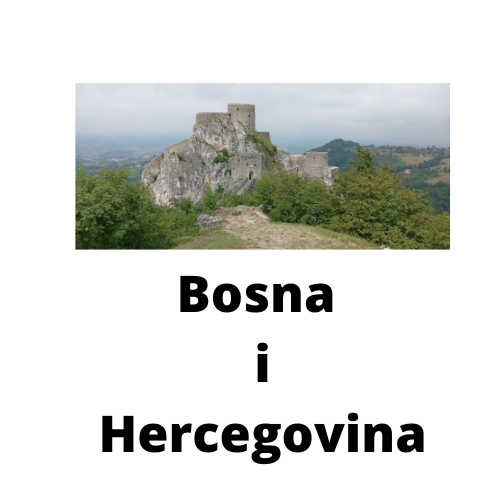

U Srebreniku prelijepom gradu u BiH nalazi se jedan Stari grad koji je bio dom bosanskog bana Stjepana II Kotromanića.
Stari most u Mostaru je most širok 4 metra, dug 30 i nalazi se na visini od 24 metra iznad rijeke Neretve.
Neum je jedini grad u BiH koji izlazi na Jadransko more.
D-Developer